ZHANG, Zhanpeng
Senior Computer Vision Researcher
Unit 226-230, 2/F Core Building 2, |
||
Biography
Zhanpeng Zhang received his PhD degree at Multimedia lab, Department of Information Engineering in the Chinese University of Hong Kong. His supervisor was Prof. Xiaoou Tang. He was also co-supervised by Prof. Chen Change Loy. Before that, he received his B.E. and M.E. degrees in 2010 and 2013, respectively, from Sun Yat-Sen University, Guangzhou, China.
His research interests include computer vision and machine learning, particularly face image analysis and human activity understanding.
We are recruiting interns / full-time researchers in computer vision at SenseTime (Hong Kong or Shenzhen). If you are interested in, feel free to send your CV to my email.
Publications
| 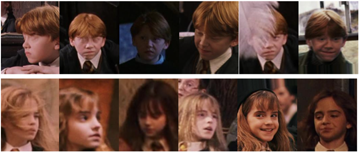 |
Joint Face Representation Adaptation and Clustering in Videos[PDF] Zhanpeng Zhang, Ping Luo, Chen Change Loy, Xiaoou Tang. in Proceedings of European Conference on Computer Vision (ECCV), Amsterdam, Netherlands, 2016 [PDF] [Project Page] |
| 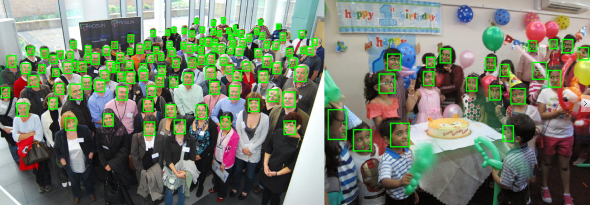 |
Joint Face Detection and Alignment Using Multitask Cascaded Convolutional Networks[PDF] Kaipeng Zhang, Zhanpeng Zhang, Zhifeng Li, Yu Qiao IEEE Signal Processing Letters, 23(10), 2016. [PDF] [Project Page] |
| 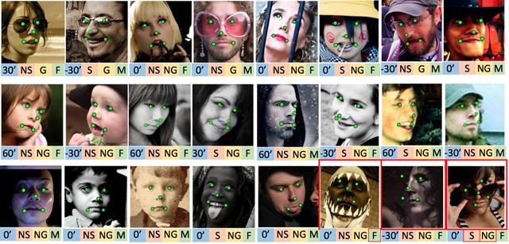 |
Learning Deep Representation for Face Alignment with Auxiliary Attributes [PDF] Zhanpeng Zhang, Ping Luo, Chen Change Loy, Xiaoou Tang. IEEE Transactions on Pattern Analysis and Machine Intelligence (TPAMI), 38(5), 2016. |
| 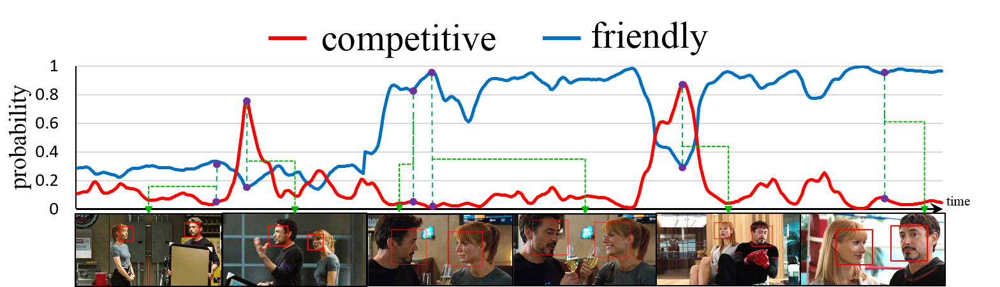 |
Learning Social Relation Traits from Face Images Zhanpeng Zhang, Ping Luo, Chen Change Loy, Xiaoou Tang. in Proceedings of International Conference on Computer Vision (ICCV), Santiago, Chile, 2015 |
| 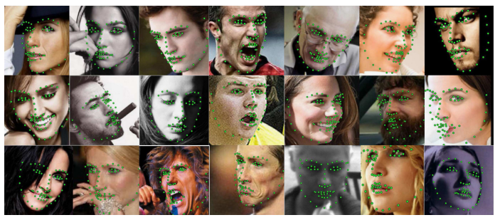 |
Facial Landmark Localization using Hierarchical Pose Regression [PDF] Zhanpeng Zhang, Wei Zhang, Huijun Ding, Jianzhuang Liu, Xiaoou Tang. Pattern Recognition, 48(4), 2015. |
| 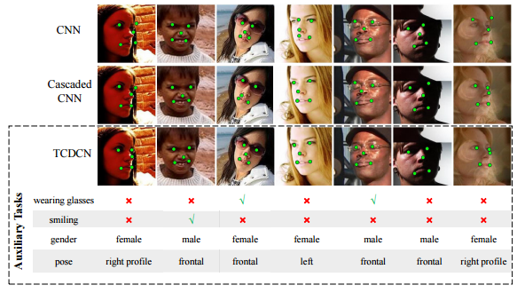 |
Facial Landmark Detection by Deep Multi-task Learning Zhanpeng Zhang, Ping Luo, Chen Change Loy, Xiaoou Tang. in Proceedings of European Conference on Computer Vision (ECCV), Zurich, Switzerland, 2014 [PDF] [Project Page (code&data)] [Video] |
| 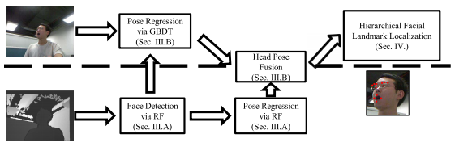 |
Multi-view Facial Landmark Localization in RGB-D Images via Hierarchical Regression with Binary Patterns
[PDF] Zhanpeng Zhang, Wei Zhang, Jianzhuang Liu, Xiaoou Tang. IEEE Transactions on Circuits and Systems for Video Technology (TCSVT), 24(9), 2014. |
| 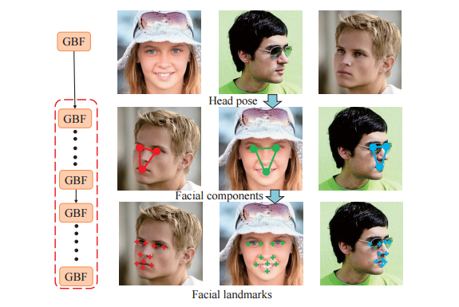 |
Facial Landmark Localization Based on Hierarchical Pose Regression with Cascaded Random Ferns [PDF] Zhanpeng Zhang, Wei Zhang, Jianzhuang Liu, Xiaoou Tang. in Proceedings of the 21st ACM international conference on Multimedia (ACM MM), Barcelona, Spain, 2013 |
| 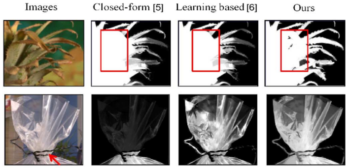 |
A Novel Nonlinear Regression Approach for Efficient and Accurate Image Matting [PDF] Qingsong Zhu, Zhanpeng Zhang, Zhan Song, Yaoqin Xie, Lei Wang. IEEE Signal Processing Letters, 20(11), 2013. |
|
Learning based Alpha Matting using Support Vector Regression [PDF] Zhanpeng Zhang, Qingsong Zhu, Yaoqin Xie. in Proceedings of IEEE International Conference on Image Processing (ICIP), Orlando, USA, 2012 |
|
| 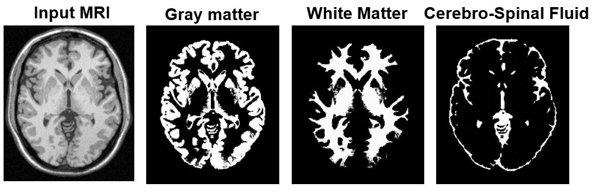 |
MRI Segmentation of Brain Tissue based on Spatial Prior and Neighboring Pixels Affinities [PDF] Zhanpeng Zhang, Qingsong Zhu, Yaoqin Xie. in Proceedings of International Conference on Pattern Recognition (ICPR), Tsukuba Science City, Japan, 2012 |
| 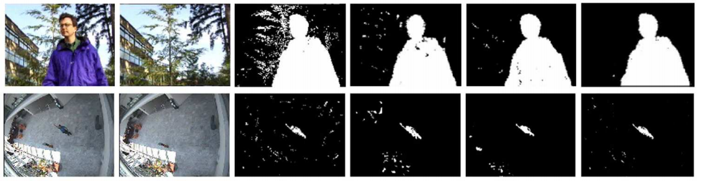 |
A Recursive Kernel Density Learning Framework for Robust Foreground Object Segmentation [PDF] Qingsong Zhu, Zhanpeng Zhang, Yaoqin Xie. Applied Mathematics & Information Sciences, vol. 6, May, 2012 |
| 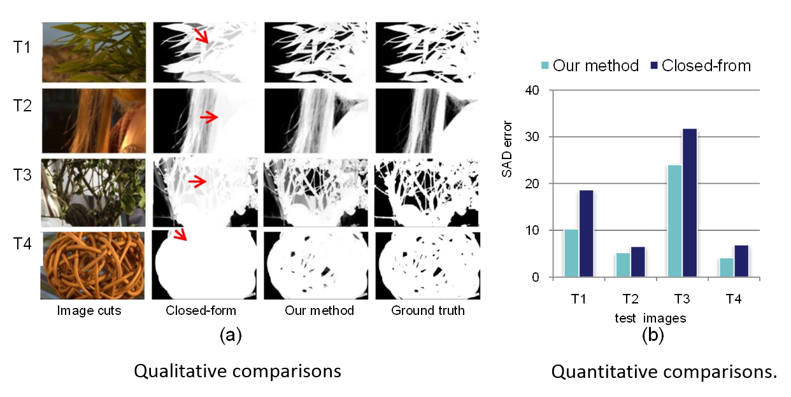 |
A Novel Image Matting Approach based on Naive Bayes Classifiers [PDF] Zhanpeng Zhang, Qingsong Zhu, Yaoqin Xie. in Proceedings of International Conference on Intelligent Computing (ICIC), Huangshan, China, 2012 |
| 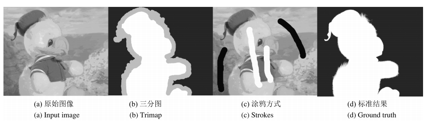 |
The Latest Research Progress on Digital Matting [PDF] Zhanpeng Zhang, Qingsong Zhu, Yaoqin Xie. Acta Automatica Sinica (自動化學報), 38(10), 2012. (in Chinese) |
| 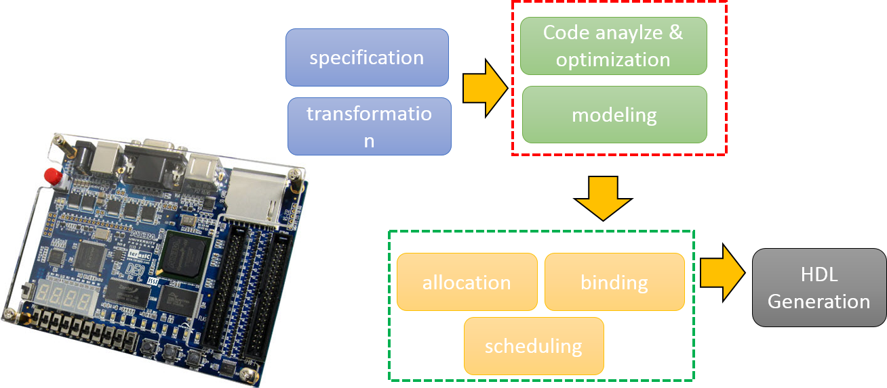 |
Review on Memory Subsystems in High Level Synthesis for FPGA [PDF] Zhanpeng Zhang, Zhiguo Zhang. Computer Science (計算機科學), 39(6A), 2012. (in Chinese) |
Patents
| Methods and Systems for Social Relation Identification | Inventor | PCT, filed in 07/2015 |
| A Method and A System for Facial Landmark Detection based on Multi-task | Inventor | PCT/CN2014/000769 |
Journal/Conference Reviewer
Honors & Awards
- Doctoral Consortium Award, ICCV 2015
- Hong Kong PhD Fellowship, 2013-2016
- Postgraduate Education Scholarship, Sun Yat-Sen University, 2010-2012
- First Prize of Science & Technology Competition, Sun Yat-Sen University, 2009
- Second Prize Scholarship, Sun Yat-Sen University, 2008-2009
- First Prize Scholarship, Sun Yat-Sen University, 2007
- National Scholarship, 2007
- Guangdong Province Merit Student (Only 1 student in the school), 2006
This award is established by the Research Grants Council (RGC) of Hong Kong in 2009,
the Hong Kong PhD Fellowship Scheme (HKPFS) aims at attracting the best and brightest
students in the world to pursue their PhD studies in Hong Kong's institutions. About
130 students are awarded each year.
Awarded by Ministry of Education, China. The top 1% students in university are awarded.
Teaching
| 2014-2015 | Fall & Spring | Teaching Assistant for Final Year Project "Human Relation Recognition from Images" |
| 2014-2015 | Spring | Teaching Assistant for IERG 4160: Image and Video Processing |
Personal Interests
- Reading, Travelling, Cooking, Chinese Poems